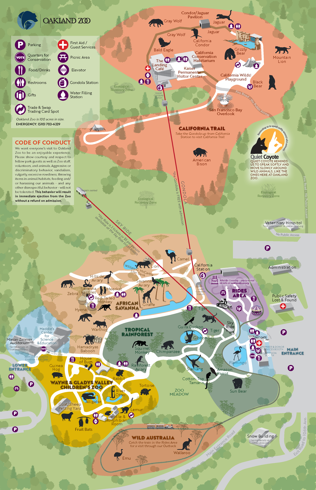

Spin the satellite map underneath your PDF until the features line up. Your PDF stays fixed — only the satellite rotates.
Drag the 4 corner handles on the map to match the corners of your PDF overlay — Top-Left, Top-Right, Bottom-Right, Bottom-Left.